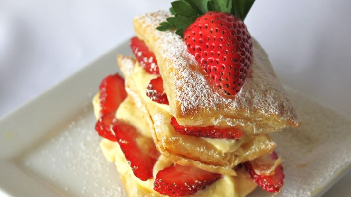

Ingredients
- 3.5 ounce instant vanilla pudding and pie filling
- 1 cup cold 2% milk
- 1 1/2 cups non-dairy whipped topping, thawed
- 17.25 ounce frozen puff pastry, thawed
- 1 pint fresh strawberries, thinly sliced
- 1/4 cup confectioners' sugar
Directions
- Preheat oven to 400 degrees F (200 degrees C).
- Combine pudding mix and cold milk; fold in whipped topping. Refrigerate until ready to use.
- Unfold pastry on a cool, lightly floured surface. Cut into 3 strips along fold marks, then cut each strip into four equal pieces. Place 2 inches apart on a baking sheet.
- Bake for 15 minutes in the preheated oven, or until golden brown. Remove from baking sheet, and cool.
- Split pastries into 2 layers, setting the 8 best looking tops aside. Spread 8 bottom layers with dollops of the pudding mixture. Top each with a layer of strawberries, a small amount of pudding, and another pastry layer.
- Spread with remaining pudding mixture and strawberries, and top with remaining pastry layers (the best looking ones). Sprinkle with confectioner's sugar.